实拍效果
Footage
动机
Motivation
如果你去过香港或澳门，走在弥敦道或是旺角街头，抬头望去，招牌上那些苍劲有力的汉字，就是北魏真书。这些手写招牌早已是香港的文化符号，它不只是信息载体，更是一门艺术。
If you have been to Hong Kong or Macau, walk down Nathan Road or through Mong Kok and look up: the forceful characters on the shop signs are Wei Bei zhenshu, a Northern Wei stele hand in regular script. Those hand-written signs have long been a cultural symbol of Hong Kong — not only a carrier of information but an art form in its own right.
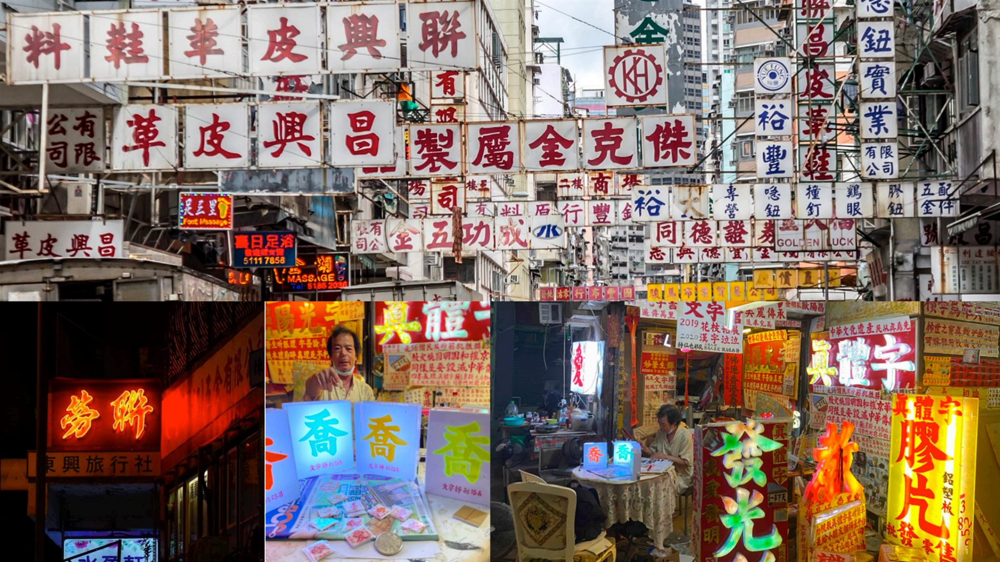
真实墨迹离不开书法家，但人的精力、笔法有天然局限。
Real ink cannot be made without a calligrapher. But a person’s stamina and brushwork have natural limits.
写几个大字、一副挥春不难，但汉字总量超十万，常用字约三千五百个，中国书法也远不止北魏真书这一种风格。篆、隶、楷、行、草五大书体，衍生出成百上千种风格。
Writing a few large characters, or one spring couplet, is not hard. But there are more than a hundred thousand hanzi in all, about 3,500 in common use, and Chinese calligraphy is far more than Wei Bei zhenshu. The five scripts — seal, clerical, regular, running, cursive — branch into hundreds of styles.
这正是字体创作者的困境：手写墨迹高度依赖书法家。少量作品还好，一旦需要成套、大规模、多书体的墨迹样本，时间、预算、人力上限三道门槛就摆在眼前。大家要么退而求其次，选用没有笔墨质感的电脑矢量字，要么只能放弃想法。
This is the bind a type designer works in: real ink depends heavily on a calligrapher. A few pieces are fine. But once you need a set of ink samples — large-scale, multi-script — three ceilings arrive together: time, budget, and hands. Most people either settle for vector type with none of the texture of ink, or give up on the idea.
现在做机器人写字 demo 的不止一家，智元等公司都演示过。但这些 demo 有个共同的限制：不能想写什么就写什么。可选的字只有几个，动作轨迹是录好再回放的，本质上是一台磁带机——按下播放，每次写出来都一样，也谈不上风格。
Several companies now demo robots writing calligraphy, AgiBot among them. They share one limit: you cannot write whatever you like. Only a handful of characters are available, and the motion is recorded and played back — a tape machine. Press play and the same character comes out, identical every time, with no style to speak of.
我们做的不同：字形是当场拆成笔画再解的，风格是另外学的。想写哪个字、写成谁的手笔，都可以换。
Ours is different: the glyph is split into strokes and solved on the spot, and the style is learned separately. Which character to write, and whose hand to write it in, can both change.
书法之美不该被人的能力边界困住。我们打造这套具身书写系统，让珍贵的手写墨迹得以留存，帮助书法创作者规模化传播，让中国书法重新回到我们的日常生活之中。
The beauty of calligraphy should not be fenced in by the limits of a person. We built this embodied writing system so that precious hand-written ink can be kept, so that calligraphers can spread their work at scale, and so that Chinese calligraphy can return to everyday life.
字体生成
Font Generation
很多知名书法家传世的字不过几百个。以现代常用字为基底，加上这位书家几百字的风格样本，就能把那种风格铺满全部常用字；那些没有留下来的字，模型也能推断——他当年会怎么写。
Many celebrated calligraphers left only a few hundred characters behind. Take the modern set of common characters as the base and a few hundred style samples from that hand, and the style can be completed across every common character. For the characters that were never recorded, the model infers how he would have written them.
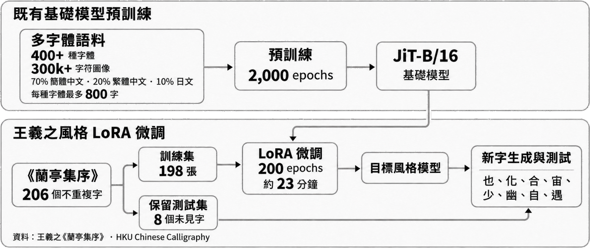

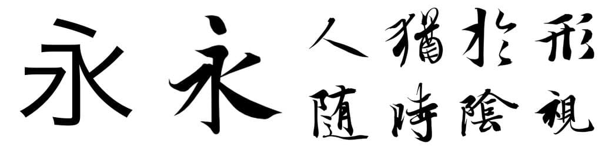

准备
Preparation

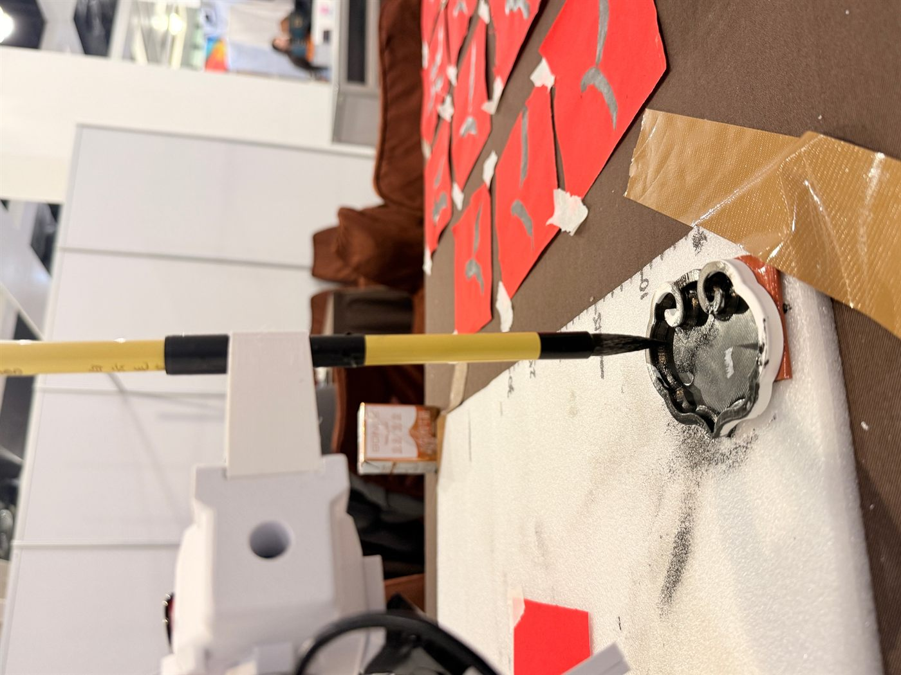
传统规则控制算法书写
Classical Rule Control
我负责算法。一张字图要变成关节角，中间四步。笔杆歪比笔尖偏两毫米更要命，所以腕滚转锁在 90 度，笔杆相对竖直的倾角压在 5 度以内，逆解只用肩、肩俯仰、肘、腕俯仰。
I owned the algorithm. Four steps turn a glyph into joint angles. A tilted brush shaft matters more than a 2 mm tip error, so wrist roll stays locked at 90° and shaft tilt stays within 5° of vertical. Inverse kinematics uses shoulder, shoulder pitch, elbow, and wrist pitch.
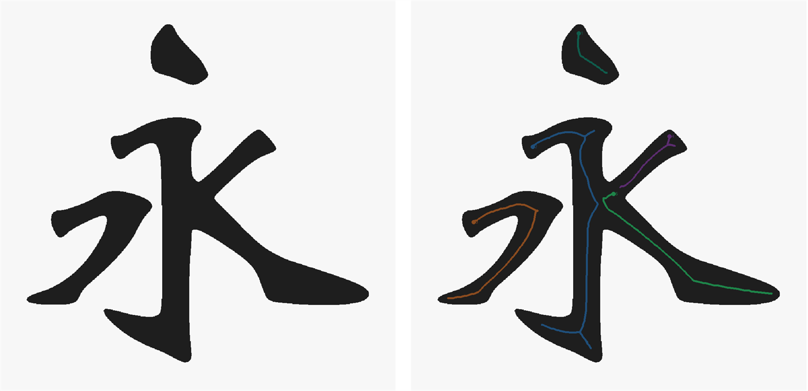
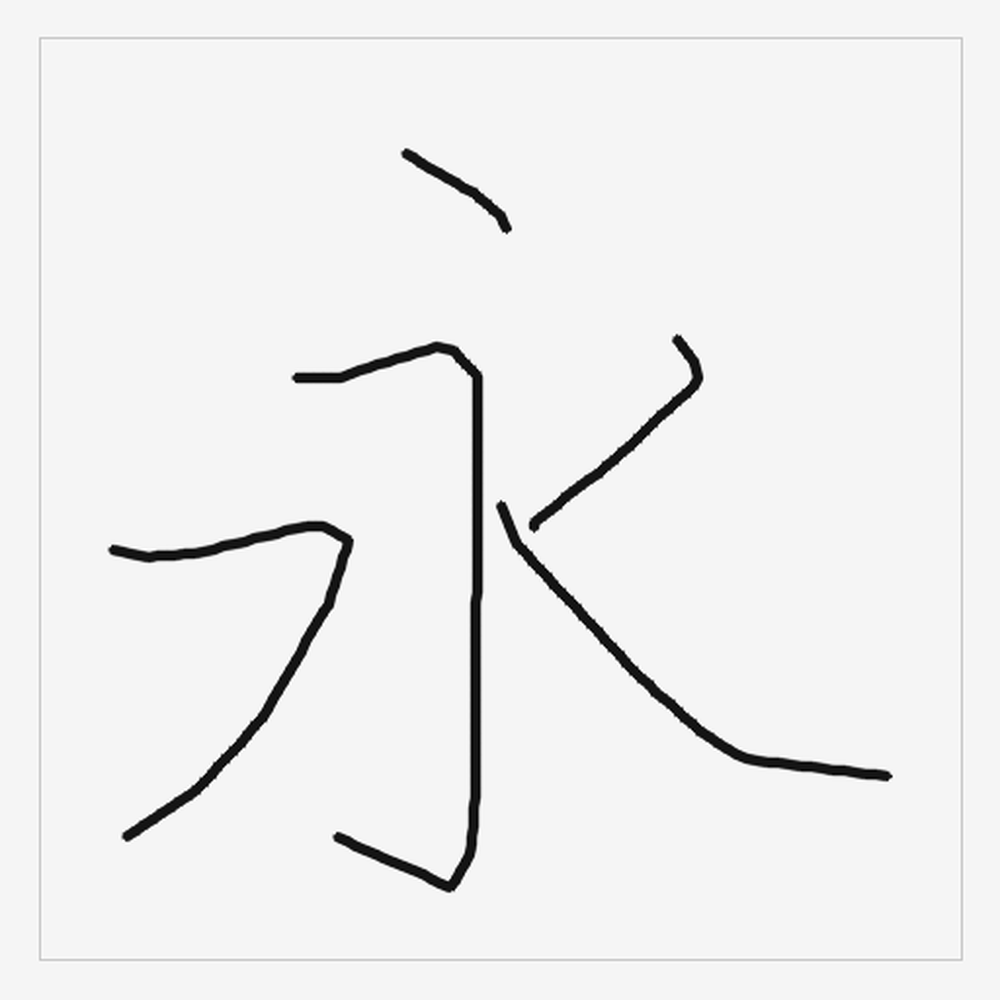
提按：把粗细写成高度
Pressure, Written as Height
毛笔没有力传感器。沿中线量法向宽度，窄的地方抬，宽的地方压，想用高度去近似提按。这一版规划器还是整笔恒定下压，这条曲线没有接进去。
The brush has no force sensor. The idea is to measure width along the normal of the centerline, lift where it is thin, and press where it is thick, so height stands in for pressure. This version’s planner still uses one constant press for the whole stroke. That curve is not wired in.
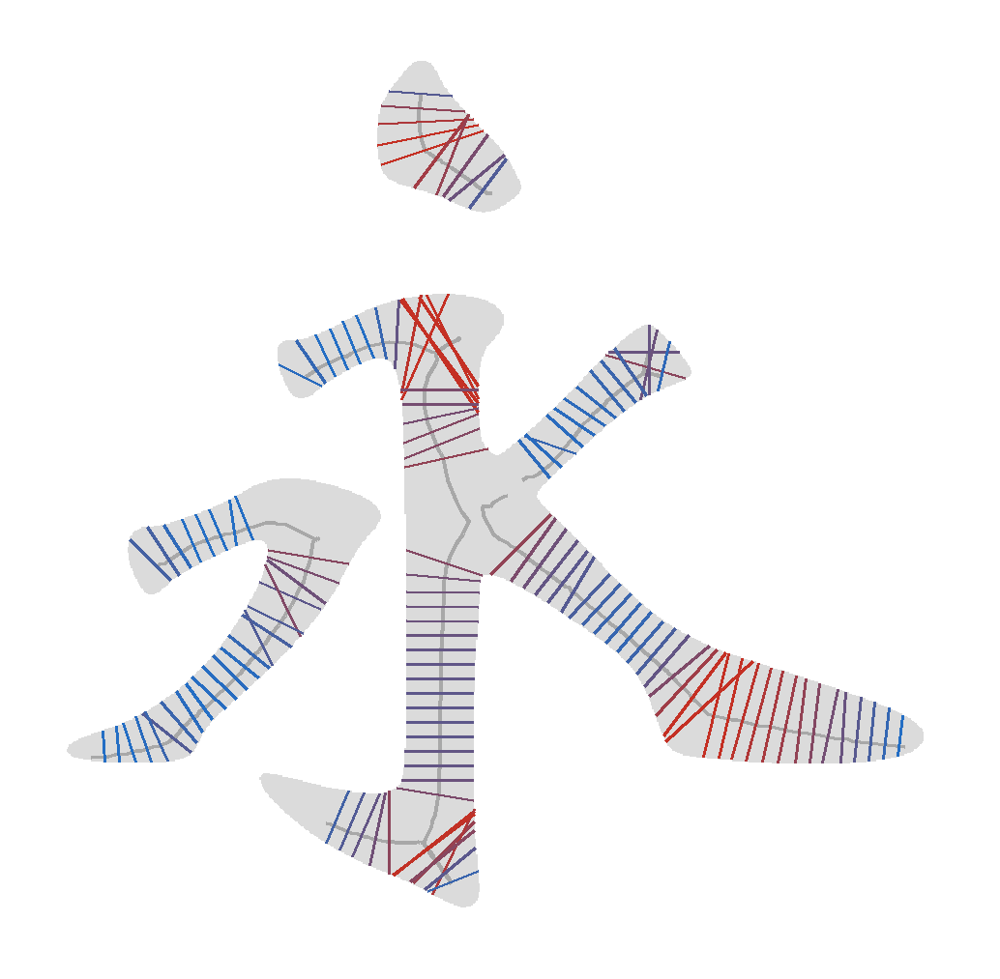
先仿真，再真机
Simulation, Then the Arm
MuJoCo 场景按 SO-101 的真实尺寸搭，桌子、纸、虚拟毛笔都在。轨迹先在仿真里跑。现场网只有几百 KB/s，数采脚本是当场让 Cursor 写的，没有把仓库拉下来。
The MuJoCo scene uses the SO-101’s real dimensions: table, paper, and a virtual brush. Trajectories ran there first. The venue network was a few hundred KB/s, so the logging scripts were written on the spot in Cursor instead of cloning a repository.

下面是浏览器里回放的仿真轨迹，写的是「澳」。可以拖动视角、暂停、改速度。这不是真机录像。
A browser replay of the exported simulation trajectory, writing 澳. Drag to orbit, pause, or change speed. This is not the real-arm recording.


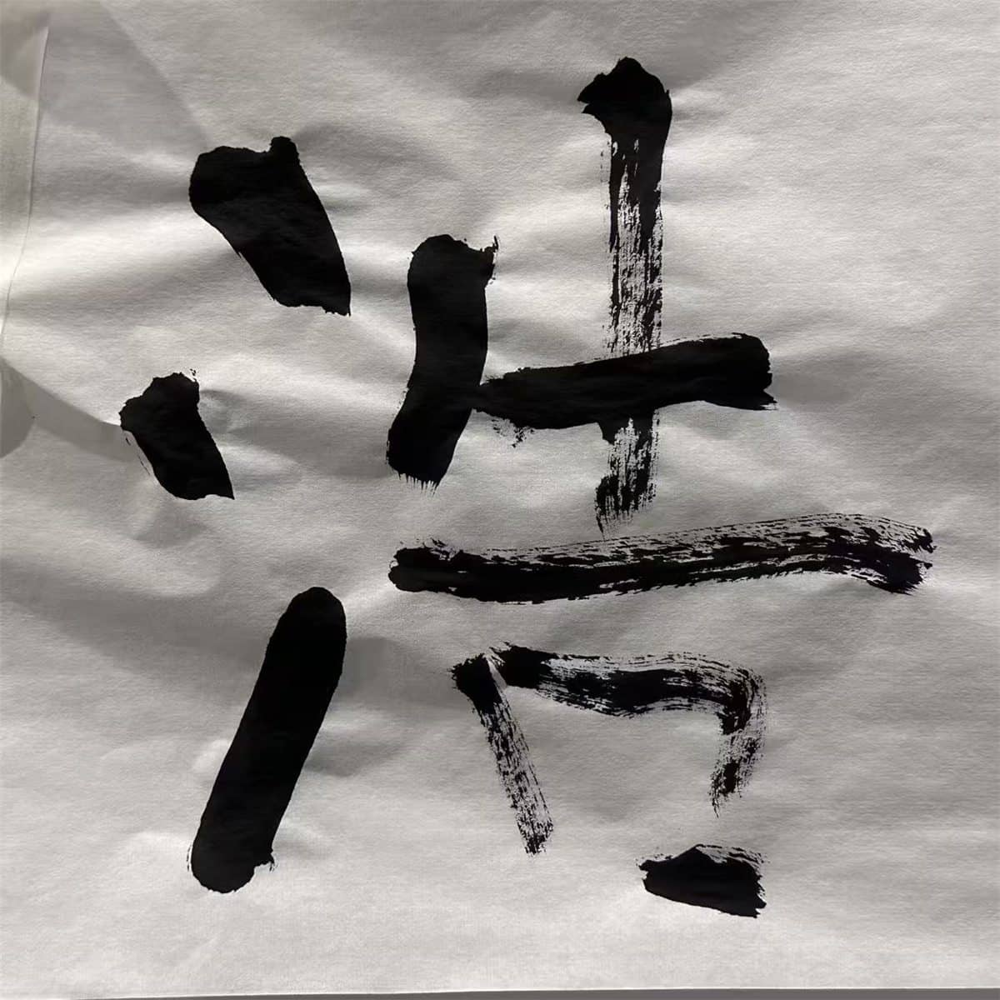
数采与模型训练
Data Collection and Model Training
规则写的是字形。人写的还有停顿和出手，那些不在字库里。所以另外采了主从同构的遥操作：30 Hz，正视和腕部两路相机。官方校准会改零点，数采没有用它。终稿这页写的是遥操 55 条，真机和仿真按 3 比 7 混合，准备训 ACT。
The rules write the geometry. A person also pauses and flicks, and that is not in a font file. The other line is isomorphic leader–follower teleoperation at 30 Hz, with front and wrist cameras. Stock calibration moves the zero, so logging did not use it. The deck’s page says 55 teleop episodes, mixed real to simulation at 3 to 7, for an ACT run.

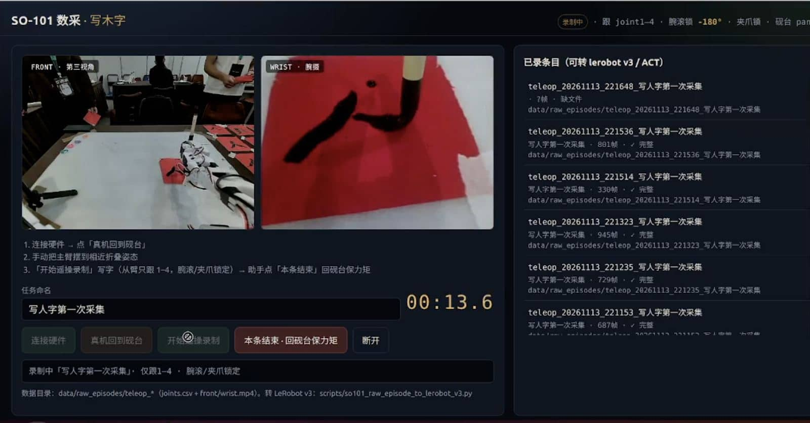
两条线不互相替换。规则保证写得出，模型追求写得像。
The two lines do not replace each other. Rules make a character come out. The model is there to make it feel written.
| 规则控制 | 模型驱动（ACT） | |
|---|---|---|
| 任意新字 | 直接写 | 要先采集 |
| 笔顺 | 显式可控 | 从数据里学 |
| 轻重提按 | 高度近似，这一版还没接上 | 想学到手感 |
| 泛化 | 字库里有的字可以直接写 | 以采过的字为主 |
| Rule control | Learned policy (ACT) | |
|---|---|---|
| A new character | Write it directly | Needs a demonstration first |
| Stroke order | Explicit | Learned from data |
| Pressure | Height as a stand-in; not wired in this version | Meant to pick up the feel |
| Generalization | Any glyph in the library | Mostly characters that were collected |
遥操作采得到动作，采不到笔法。握着主臂平移，和写毛笔不是同一个动作。
Teleoperation captures the motion, not the brush technique. Translating a leader arm is not the same action as writing with a brush.
下一步
Next
三条都还没做。终稿自己写的下一步是：遥操作换成动作捕捉再重定向，以及把粗细曲线真正写进规划器。
None of the three is started. The deck’s own next step was to replace teleoperation with motion capture and retargeting, and to put the thickness curve into the planner.
写字算法
Writing control
继续优化我负责的控制算法。给每个笔画建一套规范运笔倾角，以及同类运笔数据。
Keep improving the control algorithm I own. For each stroke, build a library of the canonical brush inclination and the related stroke data.
数位毛笔
A digital brush
把数采做扎实，把模型训好，做成一支数位毛笔。
Collect better data, train a better model, and make a digital calligraphy brush.
涂鸦
Graffiti
涂鸦机器人。概念写在页面最后，样机还没有。
The graffiti robot. The concept is at the end of this page. There is no prototype yet.
数位毛笔
A Digital Brush
把数采做扎实，把模型训好，做成一支数位毛笔。
Collect better data, train a better model, and make a digital calligraphy brush.
现在市面上已经有数位笔了，但那是给手写板和平板用的。为了把数据采得更扎实，我们打算自己做一支数位毛笔；这支笔做出来之后，同一套采集思路还能往水墨画、水粉、水彩、油画的笔触上延。
Digital styli already exist, but they are built for drawing tablets and handwriting pads. To collect better data we plan to build our own digital brush; once it works, the same collection approach can extend to ink wash, gouache, watercolour and oil painting.
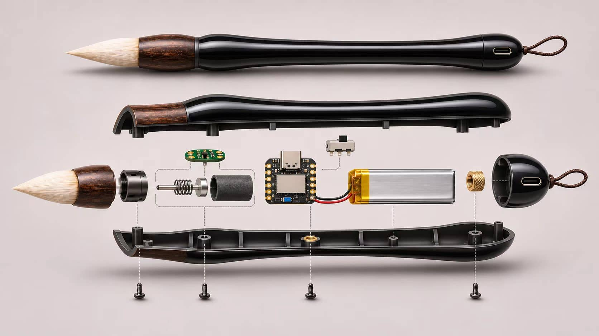
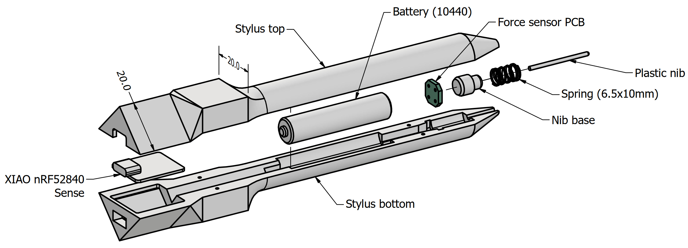
涂鸦机器人
Graffiti Robot
一个能走到墙前的身体，拿着喷头，按颜色一层一层把图案喷上去。层的顺序是画面的一部分，先喷和后喷盖住的关系不一样。这一节还只是概念，样机还没有。
A body that can walk up to a wall and lay color down one layer at a time. Layer order is part of the picture: what goes on first changes what the next layer covers. This section is still only a concept. There is no prototype yet.
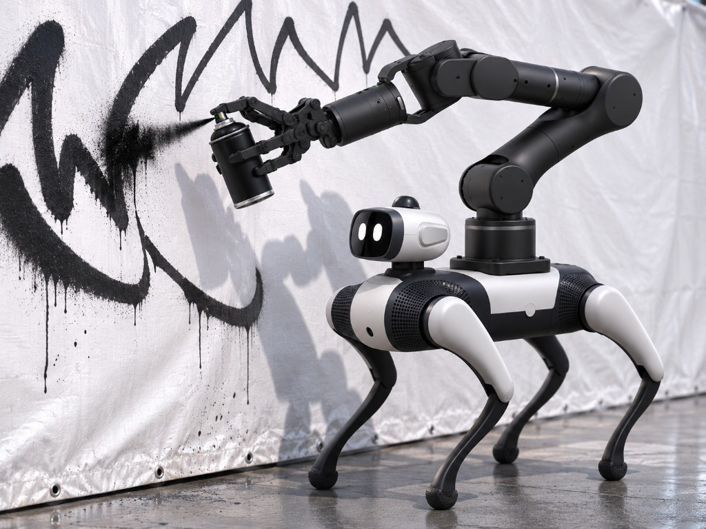
它要做成的事
The Job
大面上的涂装不要再靠好几台单色设备轮流上。一台机器按图层走：这一层是什么颜色、喷在哪、排在第几步。视觉闭环看的是墙上的结果，不是只看手臂有没有走完轨迹。墙距一旦漂，喷幅和臂的路径会一起漂。
Large-surface color should not need several single-color machines taking turns. One machine walks the layers: which color, where it goes, and which step it is. The visual loop judges the wall, not only whether the arm finished its path. If the wall distance drifts, spray width and the arm path drift with it.
模块，按这个顺序
Modules, in this order
- 身体开到墙前，定位，把墙和工作空间留在地图里。
- 稳住相对墙的距离，给喷头留出间隙。
- 在这个间隙里规划臂，并让身体和臂一起动。
- 把一张图拆成按颜色、按顺序的层，再按层喷；看着墙面结果回头修。
- Drive up to the wall, localize, and keep the wall and the workspace on the map.
- Hold the distance to the wall so the sprayer has a stable gap.
- Plan the arm inside that gap, and move the body and the arm together.
- Split one image into ordered color layers, spray them in order, and correct from the wall.
涂鸦灵感
Graffiti References
两段人手拿喷罐在墙上喷的参考，用的是原作者的播放器。不是这个项目拍的，本地也没有存视频。
Two references of a person spraying a wall, embedded from the original player. This project did not film them, and the video files are not stored here.
实验安全
Lab Safety
- 不涉及生化材料，也不涉及大型切削加工。
- 危险分类：低风险。整体是一件相对安全的实验。
- 注意用电安全，不过载，及时断电；人走关闭设备。
- 按要求完成消防、防火知识培训即可。
- No biological or chemical materials, and no heavy machining.
- Hazard class: low risk. Overall this is a comparatively safe piece of work.
- No electrical overload; disconnect promptly, and switch equipment off when leaving.
- Fire and fire-safety training as the venue requires, and that is all.
所用机械臂的型号：微信公众号介绍
The arm model used here: WeChat article
2026年11月15日的现场状态。
The setup as of Nov 15, 2026.
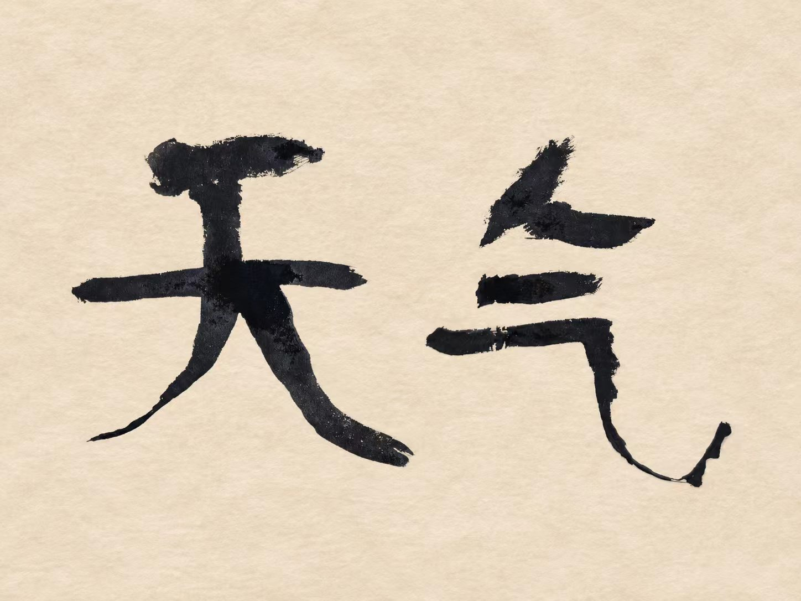
希望申请的实验场地
Space We Hope to Get
德智 6 栋 1207 · 设计专业工作室
Dezhi Building 6, Room 1207 · design studio
非常优先申请。
Top priority.
德智 15 栋 3 楼 · 会议室
Dezhi Building 15, third floor · meeting room
缺点：可能偶尔有人要用这里开会。
Drawback: it may occasionally be needed for meetings.
德智 13 栋 1 楼 · 电梯旁的仓库
Dezhi Building 13, ground floor · store room next to the lift
暂无缺点。
No drawback found.
德智 13 栋 1 楼 · 3D 打印料仓库（进玻璃门左侧）
Dezhi Building 13, ground floor · 3D-printing material store, left of the glass door
缺点：堵门。
Drawback: it blocks a doorway.
德智 15 栋 2 楼 · 角落
Dezhi Building 15, second floor · corner
缺点：窄，没有电。
Drawbacks: narrow, and no power.
场地使用时间
How long we need the space
- 预计使用两周：2026 年 11 月 20 日起，至 12 月 7 日。
- 之后视项目进度，再申请延期。
- Two weeks to begin with: from Nov 20 to Dec 7, 2026.
- Any extension will be requested later, depending on progress.
场地要求
What the space needs
- 面积：大约 10 平米。
- 供电：有墙插，能直接取电。
- 环境：可以接受设备运行的噪音。
- Floor area: about 10 m².
- Power: a wall socket we can draw from directly.
- Noise from running equipment is acceptable.